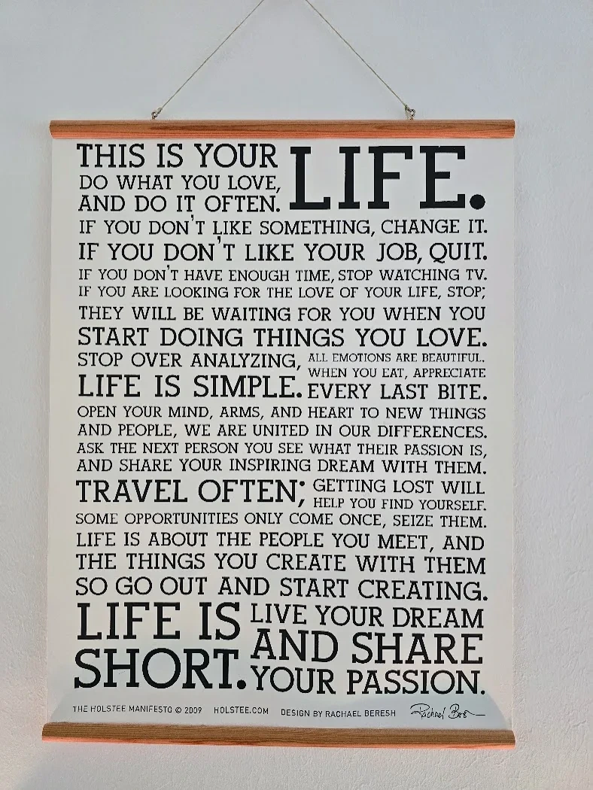

On the wall
The poster that started it

It has been on the wall a long time. Not as decoration, and not because every line of it is right — some of it is the sort of thing that reads better on paper than it lives. What it does is give permission. If you don't like your job, quit. That is not advice. It is someone stating plainly that the option exists.
Most of what stops a year like this is not money or logistics. It is the quiet assumption that you have to earn the right to stop, and that the right moment will announce itself. It does not. The poster says so in fourteen words and does not soften it.
So it stayed up, and eventually the year happened. That is the whole story of why it is here.
A manifesto of my own
Not yet. Borrowing the form was tried and it read as borrowed — clever where Holstee is direct, explaining where Holstee just says the thing. A manifesto that has to justify itself is not one.
When there is one it will be here. Until then this hangs in its place, which is what it was for.